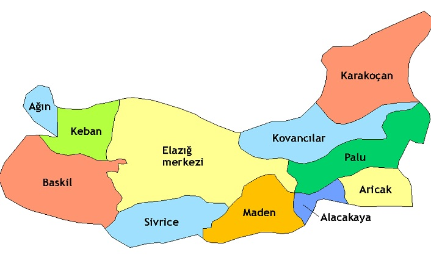
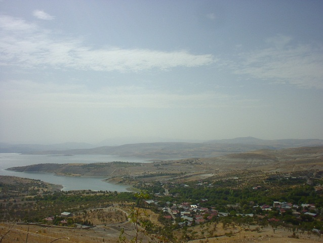
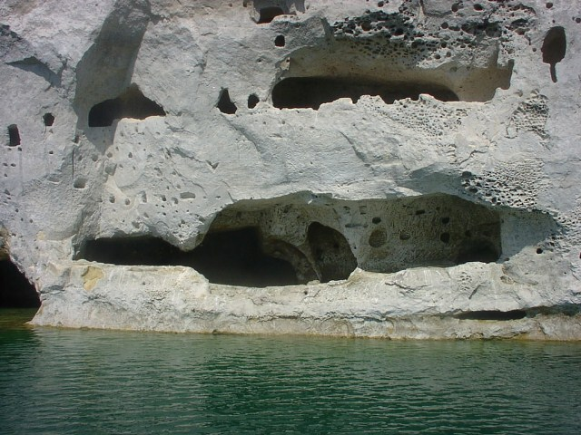

Ağın ilçesinin nüfusu 2019 yılı verilerine göre 2.626 olup Elazığ il merkezi ile arası 77 km'dir.Ağın 1954 yılında ilçe olup Elazığ'a bağlanmıştır.Ağın isminin; toprağının beyaz olması nedeniyle AĞ YURT anlamına geldiği ifade edilir.Türkçede akıcı,cereyan anlamına gelir. İlçe Hastek Kalesi, Bademli Kaya Mezarları, Höyükleri ve Şenkaya Çukuru (Kup),Balkaya (Sülük ) Krater Gölü,Tarihi Çınarları,ilçe merkezinde bulunan İspir Konağı ve geleneksel mimariyi yansıtan Ağın Evleri ilçenin önemli değerleridir.


Elazığ'dan Ağın'a ulaşım karayolu ile yapılmakta olup, Keban Baraj gölü üzerinden de feribotla sağlanmaktadır.İlçenin en önemli gelir kaynağını tarım teşkil eder.İlçede buğday,arpa,nohut,üzüm,nar,badem,ceviz,dut,elma ve kayısı yetiştirilmektedir.Ağın Leblebisi ülke sathında bilinen en meşhur ürünüdür.Ağın kültürel yönden; Harput kültüründen etkilenen Kemaliye (Eğin) ve Arapgir yöresi Halk kültürü ile benzer özellikler gösterir.